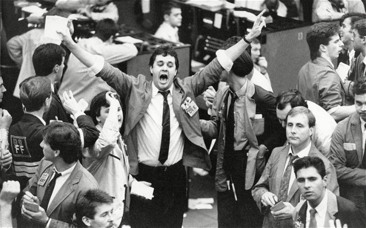

Le trading social, ce n'est pas tout à fait ce à quoi tu es habitué. D'une certaine manière, tout le monde connaît les « traders » — ce sont ces types avec des bretelles rouges ou des téléphones surdimensionnés, qui conduisent des voitures de luxe et qui ont l'air riches. Mais qu'est-ce qu'ils faisaient exactement pour gagner tout cet argent ? Personne ne savait vraiment. Ça avait un rapport avec l'argent, passer des coups de fil, et crier « achetez ! » et « vendez ! » dans un bâtiment bizarre. Et des graphiques incompréhensibles sur des écrans d'ordinateur.
Supprimer les barrières à l'entrée
Et puis Internet est arrivé, et avec lui, les réseaux sociaux. Tout le monde a un profil, tout le monde sait s'envoyer des messages et regarder le « Fil » ou le « Mur » de ses amis. On voit ce que tout le monde pense, boit, mange et prend en photo. C'est conçu pour être social. Communautaire.
On s'est tous habitués à ces sites tellement vite — on sait comment ils fonctionnent et quoi faire. Et quand le moment était venu, quand les connexions Internet étaient assez rapides, que tout le monde était habitué aux réseaux sociaux et que les sites web étaient devenus assez sophistiqués, le trading social est né. Un mélange de réseaux sociaux et de trading classique.
Le trading devient social
Trading Social
- Ouvert à tous
- Commencez avec de petits montants
- Copiez des traders expérimentés
- Apprenez d'une communauté
- Tradez depuis votre téléphone
Trading Traditionnel
- Barrières à l'entrée élevées
- Dépôts minimums importants
- Tout apprendre seul
- Décisions isolées
- Logiciel spécialisé requis
Même si c'est social, ça reste du trading, donc il y a encore beaucoup à apprendre et à découvrir. Ce serait une erreur de croire qu'ils ont rendu le trading en lui-même facile — c'est toujours aussi difficile qu'avant — la seule différence, c'est que maintenant tout le monde y a facilement accès.

« Démocratiser le trading » est un slogan que tu as peut-être déjà entendu, et c'est vrai, mais c'est aussi un peu un écran de fumée — les « plateformes d'échange » restent avant tout des entreprises, et avoir des millions de nouveaux clients est un coup de génie de leur part. Ils ont ouvert l'accès à tout le monde et ont fait en sorte que tout ait l'air familier.
Le Copy Trading — l'étape suivante
Le coup de génie suivant a été d'exploiter toute cette puissance informatique et le haut débit pour permettre au petit investisseur de trader comme les pros. Et si tu pouvais parcourir les profils de plein de traders différents sur une de ces plateformes, vérifier leurs statistiques, repérer ceux qui tradent bien, et ensuite simplement configurer ton compte pour les copier automatiquement ? Ce serait pas mal, non ?
Eh bien c'est possible. Quand tu trouves un trader qui semble savoir ce qu'il fait, tu peux simplement appuyer sur le gros bouton « Copier », définir le montant que tu veux investir pour le copier, et hop, ton compte reproduit automatiquement tous ses trades. C'est génial, et c'est uniquement possible grâce à la technologie dont on dispose aujourd'hui.
Le trading social est-il sûr ?
Non. Bien sûr que non — c'est toujours du trading. Tu peux toujours perdre de l'argent. Si quelqu'un te garantit qu'il va te faire gagner « X » de profit, il y a de grandes chances que tu doives fuir aussi vite que possible. Personne n'a de boule de cristal.
Est-ce réglementé ?
Faits Essentiels
- Régulé par la FCA, CySEC, ASIC
- Le copy trading est gratuit
- Frais de trading standard applicables
- Commencez avec de petites sommes
- 50 % des comptes CFD perdent de l'argent
- Les performances passées ≠ résultats futurs
Le trading social est aujourd'hui un marché tellement énorme et lucratif que les entreprises ne peuvent pas exister si elles ne sont pas réglementées — c'est-à-dire qu'elles sont supervisées par des autorités financières nationales et internationales. Il vaut mieux éviter toute plateforme de trading qui n'est pas régulée par des autorités légitimes.
Quels sont les coûts ?
Tu dois approvisionner ton compte avec de l'argent réel, mais tu n'es pas facturé par la personne que tu copies. Elle reçoit des incitations de la plateforme — plus il y a de gens qui la copient, plus elle reçoit de la part des propriétaires du site. Il y a des frais associés au trading social, comme avec tous les courtiers, mais copier quelqu'un en soi est gratuit.
Prêt à en savoir plus ?
Consulte le guide du Copy Trading pour un aperçu plus détaillé de son fonctionnement en pratique, ou lis mon article sur la fiabilité d'eToro — c'est la première question que je me suis posée quand je l'ai découvert.